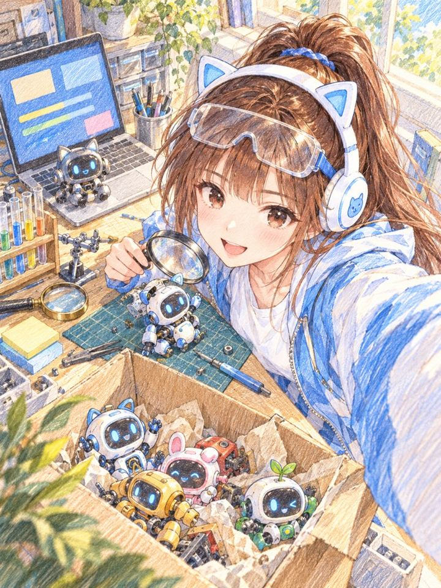

一位學員在群組問我：叫 AI 試工具，是只要給指令就好，還是要自己串？要不要去 GitHub 找工具？我的回答是，如果是 Agent，操作就叫它自己去做。難的不是操作，是審核；更難的是不用審核。這篇用朵拉 2026 年 10 月 21 日測 Indra OCR 的過程，把這句話拆開來看。
- 在社群上看到新 AI 工具很想試，可是不會裝、怕裝壞電腦的人。
- 已經有 Claude Code、Codex 這類 Agent，想讓它幫你試工具，卻不知道該放手到哪裡的人。
- 要幫團隊或客戶評估 AI 工具，想有一套固定測法的人。
- 找工具、裝工具、測工具，Agent 都可以自己做，你給一句話就好。
- 裝在「虛擬環境」裡，工具和它需要的套件都關在一個資料夾，不會弄亂你原本的程式。
- 真正要設計的是授權：哪些事 AI 自己做完，哪些事一定要停下來問你。
學員問：叫 AI 試新工具，只要給指令，還是要自己去 GitHub 串？
這是學員在群組裡的原話：
我的回答：
基本上難的不是操作，是審核。更難的是，不用審核。
這裡的 Agent，指的是可以在你電腦上自己執行指令的 AI，例如 Claude Code、Codex。前半句是操作：找工具、裝工具、跑測試，Agent 都做得到。後半句是這篇的重點：每一步都要你看過才能往下走，你就變成卡住它的那一關；要讓它不用每一步都等你，得先把「哪些不用審」講清楚。下面用一次真實的測試來看。
- 我上課不教 AI 工具，因為工具是 AI 該操作的：這一段只講「操作交給 Agent」，那篇講為什麼要從操作者換成交辦的人。
滑脆看到 Indra OCR，我標朵拉去跟 Mac 內建 OCR 比
朵拉是我的 AI 實習生，Threads 帳號 @dora_aicat，簡介公開標明是 AI。10 月 21 日我在脆上滑到一篇貼文，介紹 Datalab 新發佈的 OCR 工具 Indra OCR：主打 CPU 上一秒可以處理 44 頁、支援 80 多種語言和手寫。我在那篇底下留言標朵拉：
朵拉先在原串回一則接單，說已經記進待辦。Threads 上顯示，接單那則和測完回報那則相隔不到十分鐘。下面兩張是當天的真實截圖，左右滑可以看第二張；整串對話在這裡：Threads 原串。
這段時間她做了這些事（依她留下的原始紀錄整理）：
在實驗區開一個 indra-ocr-test 資料夾，裡面建一個 Python 虛擬環境。
用 pip 裝官方的 indra-ocr 1.1.2，連同它需要的 22 個套件，全部裝進那個虛擬環境。
寫一支小程式呼叫 Mac 內建的文字辨識（Vision，準確模式），讓兩邊吃同一批圖。
做了 7 張中文圖：印刷字 3 張、介面截圖 2 張、手寫風字型 2 張，每張都有正確答案可以對。
算每張的錯字率和耗時。耗時取第 2、3 次呼叫的中位數，避開第一次下載模型的時間。
指令、完整輸出、版本、截圖都存下來，再回到原本那串跟我回報，附上整理好的表。
測試跑在我的 Mac mini 上（Apple M2 Pro），Indra OCR 用 CPU、4 個執行緒。第一次執行要先從網路下載 12 個檔案，整段跑了 28 秒；下載好以後再啟動，從開程式到模型載入好大約 0.8 秒。
測試結果：這 7 張中文圖 Mac 內建比較準，Indra OCR 比較快
| 樣本 | 正解字數 | Mac 錯字率 | Indra 錯字率 | Mac 耗時（毫秒） | Indra 耗時（毫秒） |
|---|---|---|---|---|---|
| 手寫風字型 1 | 58 | 0.0% | 0.0% | 106 | 61 |
| 手寫風字型 2 | 40 | 0.0% | 5.0% | 94 | 49 |
| 印刷字 1 | 159 | 0.6% | 4.4% | 173 | 83 |
| 印刷字 2 | 112 | 0.0% | 0.0% | 136 | 68 |
| 印刷字 3（小字） | 122 | 1.6% | 0.0% | 110 | 65 |
| 介面截圖 1 | 50 | 0.0% | 0.0% | 74 | 63 |
| 介面截圖 2 | 66 | 1.5% | 4.5% | 92 | 69 |
| 平均 | 0.54% | 1.99% | 112 | 66 |
錯字率是字元錯誤率：辨識結果要改幾個字才會跟正確答案一樣，再除以正解字數。朵拉回報的結論是：這批小樣本 Mac 比較準，Indra 比較快。她另外寫了三點：
- 手寫是用手寫風字型模擬的，真人手寫沒有測。
- 官方說的一秒 44 頁，是 32 核心機器上的數字。我另外請另一家 AI 查了官方 GitHub 的 README，確認寫的是 32 核心。
- 貼文說它在 OmniParseBench 上只落後 DeepSeek OCR 2 不到 4 個百分點，這個數字她在官方 README 裡沒有找到，另一家 AI 複查也沒找到。
虛擬環境是什麼：給這次測試一個專用工具箱
朵拉裝工具的地方叫 Python 虛擬環境（venv）。先講沒有它會出什麼事。
一個工具背後有一堆零件
Indra OCR 要能跑，背後要用到很多別人寫好的零件，叫做「套件」：處理圖片的、做數學運算的、下載模型的。這次裝 indra-ocr 時，一起被裝進來的套件有 22 個。
零件共用，就會版本打架
你電腦上其他用 Python 寫的工具也在用這些零件。假設 Indra OCR 要的是某個圖片零件的新版，你另一支程式只能用舊版；兩邊共用同一套零件的話，裝 Indra 時舊版會被換掉，另一支程式就壞了。
虛擬環境把零件關在一個資料夾
朵拉先建一個資料夾 indra-ocr-test/venv/，Indra OCR 和它要的零件全部裝進去。Indra 跑的時候只用這裡面的零件，其他程式照舊用原本那套。測完不要了，整個資料夾丟進垃圾桶，裝進去的零件就跟著移除。
比喻是幫新同事準備一個專屬工具箱：他要用的扳手、螺絲都放在自己的箱子裡，不去動公司共用的工具牆。人走了，箱子收走就好。
| 虛擬環境 | 做得到 | 做不到 |
|---|---|---|
| 裝的東西 | 工具和套件都裝在那個資料夾，不會弄亂你原本的程式 | |
| 程式能碰的檔案 | 程式在裡面跑的時候，還是讀得到你電腦上的其他檔案 | |
| 網路 | 照樣可以上網 | |
| 清除 | 整個資料夾移掉，裡面的套件跟著移除 | 工具自己下載到別處的檔案（這次的模型就存在使用者資料夾的快取裡）、測試產出的檔案，要另外清 |

更難的是不用審核：朵拉自己做完、停下來問我的分界
朵拉這次從接單到回報，中間一次都沒有問我「可以裝嗎」「可以跑嗎」。能這樣跑，是因為授權範圍事先講好了。10 月 20 日我是這樣跟 AI 說的：
寫進朵拉的工作規則以後，標註本身就是授權，包含在獨立的實驗資料夾裡裝軟體試用、跑工具、查資料。她一定要停下來回報的，只剩四種：
| 停下來的情況 | 例子 |
|---|---|
| 要我本人親手做的 | 登入帳號、輸入密碼、按系統權限彈窗、插裝置 |
| 要花錢的 | 付費方案、要綁卡的 API |
| 要用我本人帳號對外發文或承諾的 | 用我的帳號留言、答應別人事情 |
| 碰到金鑰、密碼，或要刪改既有檔案的 | API key、覆寫我原本的資料 |
停下來的時候，她要寫清楚需要我做哪一個動作。四種以外的，她自己做完。
不用審核，換成事後看得到證據
不用每一步審，不代表不看。朵拉的規則另外寫了一條：每次實測、試用，都要留三樣東西：原始紀錄（指令、每一次的完整輸出、時間、版本）、截圖、一段摘要，只有摘要不算。這次的測試資料夾裡就有安裝紀錄、兩邊的完整輸出、錯字率計算程式和結果檔。我想追問哪個數字，可以直接回去對原始紀錄。
- AI 任務多到管不過來，下一步怎麼辦？：這一段只講朵拉試工具的授權，那篇講 AI 員工的權責怎麼分、用誰的帳號做事。
- 寫了一堆規則給 AI，為什麼還是沒人執行？：朵拉接單之後為什麼不會沒下文，靠的是每半小時巡一次任務的排程。
你也可以這樣交辦：一段叫 Agent 幫你試工具的提示詞
你用的是 Claude Code、Codex 這類可以在電腦上執行指令的 Agent，就可以直接把下面這段貼給它，把工具名稱換掉：
第一次交辦，可以先挑一個不用登入、不用付費的開源工具，看它回來的紀錄長什麼樣子，再決定下一次要放手到哪裡。
- 裝了別人的技能包，AI 會不會被搞亂？：要裝的是別人寫好的技能包時，先看來源和權限的三件事。
- AI 一直停下來要授權，怎麼讓它順順跑完？：讓 AI 連續工作時，錯誤不會一路滾大的五條護欄。